소방설비기사(기계분야) (2006-05-14 기출문제)
1과목: 소방원론
1. 다음의 법칙 중 “온도가 일정할 때 기체의 부피는 절대 압력에 반비례한다”라는 법칙은?
- 스테판 볼쯔만의 법칙
- 보일의 법칙
- 보일-샤를의 법칙
- 패닝의 법칙
(정답률: 44%)

2. 다음은 제1류 위험물의 물리ㆍ화학적 성질에 대한 설명이다. 바르게 설명된 것은?
- 무기과산화물 등을 제외하고 일반적으로 화재시 다량의 물로 냉각소화한다.
- 가연성 고체이기 때문에 산화성 고체인 제2류 위험물과 혼촉하면 위험하고 그 이외의 위험물과는 혼촉이 가능하다.
- 산화성 액체로서 가연성이면서 자기반응성 물질이다.
- 상온에서 액체상태이며, 반응속도가 느리다.
(정답률: 52%)
3. 분말 소화약제의 소화효과가 아닌 것은?
- 방사열의 차단효과
- 부촉매효과
- 제거효과
- 발생한 불연성 가스에 의한 질식효과
(정답률: 32%)
4. 다음 중 연소현상과 관계가 없다고 보는 것은?
- 부탄가스 라이터에 불을 붙였다.
- 황린을 공기 중에 방치했더니 불이 붙었다.
- 알콜 램프에 불을 붙였다.
- 공기 중에 노출된 쇠못이 붉게 녹이 슬었다.
(정답률: 70%)
5. 화재발생시 건축물의 화재를 확대시키는 주 요인이 아닌 것은?
- 흡착열에 의한 발화
- 비화
- 복사열
- 화염의 접촉(접염)
(정답률: 52%)
6. 열복사에 관한 스테판-볼츠만의 법칙을 바르게 설명한 것은?
- 열복사량은 복사체의 절대온도에 정비례한다.
- 열복사량은 복사체의 절대온도의 제곱에 비례한다.
- 열복사량은 복사체의 절대온도의 3승에 비례한다.
- 열복사량은 복사체의 절대온도의 4승에 비례한다.
(정답률: 54%)
7. IBtu는 몇 cal 인가?
- 252
- 298
- 315
- 460
(정답률: 35%)
8. 분해 폭발을 일으키며 연소하는 가연성 가스는?
- 염화비닐
- 시안화수소
- 아세틸렌
- 포스겐
(정답률: 48%)
9. 목재, 종이 등의 일반적인 가연물의 화재 시 물을 주수하여 기화열을 이용, 열의 흡수로 소화하는 소화법은?
- 냉각소화
- 질식소화
- 제거소화
- 화학소화
(정답률: 68%)
10. 혼합공정에서 가해지는 연소억제제 중 무기첨가제에 해당 되는 것은?
- 황
- 염소
- 브롬
- 아연
(정답률: 32%)
11. 플래시 오버(flash over) 현상을 바르게 나타낸 것은?
- 에너지가 느리게 침척되는 현상
- 가연성 가스가 방출되는 현상
- 가연성 가스가 분해되는 현상
- 폭발적인 착화현상
(정답률: 52%)
12. 연소의 형태 중 표면연소를 일으키는 물질이 아닌 것은?
- 숯
- 메탄
- 목탄
- 금속분
(정답률: 50%)
13. 화재의 소화원리에 따른 소화방법의 적용이 잘못된 것은?
- 냉각소화 : 스프링클러설비
- 질식소화 : 이산화탄소소화설비
- 제거소화 : 포소화설비
- 억제소화 : 할로겐화합물소화설비
(정답률: 65%)
14. 연기감지기가 작동할 정도의 연기농도는 감광계수로 얼마 정도인가?
- 1.0m-1
- 2.0m-1
- 0.1m-1
- 10m-1
(정답률: 52%)
15. 다음 중 열경화성 수지가 아닌 것은?
- 페놀 수지
- 요소 수지
- 폴리에틸렌 수지
- 엘라민 수지
(정답률: 38%)
16. 다음 중 전산실, 통신기기실 등의 소화에 가장 적합한 것은?
- 스프링클러설비
- 옥내소화전설비
- 분말소화설비
- 할로겐화합물소화설비
(정답률: 55%)
17. 화재가 일정 이상 진행되어 운동으로 연기가 새어 들어오는 화재를 발견할 때의 일반적인 안전대책으로 잘못된 것은?
- 빨리 문을 열고 복도로 대피한다.
- 바닥에 엎드려 숨을 짧게 쉬면서 대피대책을 세운다.
- 문을 열지 않고 수건 등으로 문틈을 완전히 밀폐한 후 창문을 열고 화재를 알린다.
- 창문으로 가서 외부에 자신의 구원을 요청한다.
(정답률: 42%)
18. 화재하중을 나타내는 단위는?
- kcal/kg
- ℃/m2
- kg/m2
- kg/kcal
(정답률: 56%)
19. 아세틸렌 가스를 저장할 때 사용되는 물질은?
- 벤젠
- 톨루엔
- 아세톤
- 에틸알콜
(정답률: 44%)
20. 초기소화용으로 사용되는 소화설비가 아닌 것은?
- 옥내소화전설비
- 열분무설비
- 분말소화설비
- 연결송수관설비
(정답률: 55%)
2과목: 소방유체역학
21. 일률(시간당 에너지)의 차원을 기본 차원인 N(질량), L(길이), T(시간)로 올바르게 표시한 것은?
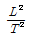
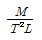
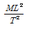
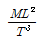
(정답률: 33%)
22. 그림과 같이 노즐에서 분사되는 물의 속도가 V-12m/s이고, 분류에 수직인 평판은 속도 u=4m/s로 움직일 때, 평판이 받는 힘은 몇 N인가? (단, 노즐(분류)의 단면적은 0.01m2이다.)
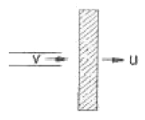
- 640
- 960
- 1280
- 1440
(정답률: 40%)
23. 연전도도가 0.08W/m-K인 단열재의 내부면의 온도9고온)가 75℃, 외부면의 온도(저온)가 20℃이다. 단위 면적당 열손실을 200W/m2으로 제한하려면 단열재의 두께는?
- 22.0mm
- 45.5mm
- 55.0mm
- 80.0mm
(정답률: 40%)
24. 탄산수소칼륨(KHCO3)과 요소(CO(NH2)2)와의 반응물을 주 성분으로 하는 소화약제는?
- 제1종 분말
- 제2종 분말
- 제3종 분말
- 제4종 분말
(정답률: 47%)
25. 그림과 같이 수조의 밑부분에 구멍을 뚫고 물을 유량 Q로 방출시티고 있다. 손실을 무시할 때 수위가 처음 높이의 742로 되었을 때 방출되는 유량은 어떻게 되는가?
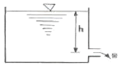
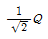
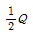
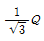
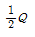
(정답률: 54%)
26. 공동현상(cavitation) 발생원인과 가장 관계가 없는 것은?
- 펌프의 흡입수두가 클 때
- 관내의 수온이 높을 때
- 관내의 물의 정압이 그때의 증기압보다 낮을 때
- 펌프의 설치 위치가 수원보다 낮을 때
(정답률: 25%)
27. 수평원관으로 일정량의 물이 층류상태로 흐를 때 관직결을 2배로 하면 손실수두는 얼마가 되는가?
- 1/4
- 1/8
- 1/16
- 1/32
(정답률: 22%)
28. 수두 100mmAq로 표시되는 압력은 몇 Pa인가?
- 0.098
- 0.98
- 9.8
- 980
(정답률: 39%)
29. 그림에서 P1-P2는 몇 kN/m2인가? (단, h의 단위는 m, 수은의 비중은 13.5, 물의 비중은 1, 비중량은 9800N/m3이다.)
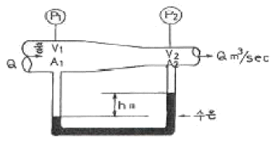
- 1355000h
- 122500h
- 135.5h
- 122.5h
(정답률: 26%)
30. 유체의 흐름 중 난류 흐름에 대한 설명으로 틀린 것은?
- 레이놀즈수(Re)가 4000이상인 원관 내부 유체의 흐름
- 유체의 각 입자가 불규칙한 경로를 따라 움직이면서 흐르는 흐름
- 유체의 입자가 갖는 관성력이 입자에 작용하는 점성력에 비하여 매우 크게 작용하는 흐름
- 유체의 입자가 갖는 관성력에 비하여 입자에 작용하는 점성력이 크게 작용하는 흐름
(정답률: 38%)
31. 원심펌프의 비속도(n2)를 표현한 식으로 맞는 것은? (단, Q는 유량, N은 펌프의 분당 회전수, H는 전양정)
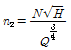
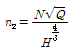
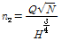
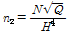
(정답률: 17%)
32. 다음 관 부속품 중 일정 속도로 흐르는 유량에 대하여 마찰손실이 가장 큰 것은? (단, 구경과 관 마찰계수는 모두 동일 하다고 본다.)
- 45° 엘보
- 20° 엘보
- 90° EI(직류)
- 93° EI(분류)
(정답률: 23%)
33. 뉴튼(Newton)의 점성법칙을 이용한 회전원통식 점도계는?
- 세이볼트(Saybolt) 점도계
- 오스왈트(Ostwald) 점도계
- 레드우드(Redwooe) 점도계
- 스토머(Stormer) 점도계
(정답률: 38%)
34. 압력 P1=100 kPa, 온도 T1=400K, 체적 V1=1.0m3인 밀폐계(closed system)의 이상기체가 PV3.4=상수 인 폴리트로픽 과정(polytropic process)을 거쳐 압력 P2=400kPa 까지 압축된다. 이 과정에서 기체가 한 일은 약 몇 kJ인가?
- -100
- -120
- -140
- -160
(정답률: 18%)
35. 분말 소화설비와 겸용해서 사용할 경우 유류화재에 가장 좋은 소화효과를 나타내는 포소화약제는?
- 단백포
- 내알콜형포
- 고??포
- 수심막포
(정답률: 29%)
36. 카르노 사이클에서 고온 열저장소에서 받은 열량이 QH이고 저온열저장소에서 방출된 열량이 QL일 때 카르노 사이클의 열효율 η는?
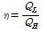
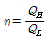
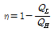
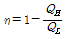
(정답률: 42%)
37. 제2종 분말 소화약제가 열분해 되었을 때 생성되는 물질이 아닌 것은?
- CO2
- H2O
- H3PO4
- K2CO3
(정답률: 54%)
38. 유체 속에 잠겨진 물체에 작용되는 부력은?
- 물체의 중량보다 크다.
- 그 물체의 중력과 같다.
- 물체의 중력과 같다.
- 물체의비중량과 관계가 있다.
(정답률: 22%)
39. 합성 계면 활성제포의 고발포용 소화약제로 사용하는 3가지 종류가 아닌 것은?
- 1%형
- 1.5%형
- 2%형
- 2.5%형
(정답률: 36%)
40. 다음 중에서 2차원 비압축성유동의 연속방정식을 만족하지 않는 속도벡터는? (단, i, j는 각각 x, y 방향의 단위벡터를 나타낸다.)
- V=(16y-15x)i+(12y-9x)j
- V=(-5x)i+(5y)j
- V=(2x2+y2)i+(-4xy)j
- V=(4xy+y2)i+(6xy+3x)j
(정답률: 14%)
3과목: 소방관계법규
41. 다음은 소방시설에 대한 분류이다. 잘못된 것은?
- 소화설비 : 옥내소화전설비, 옥외소화전설비
- 소화활동설비 : 비상콘센트설비, 제연설비, 연결송수관설비
- 피난설비 : 자동식사이렌, 구조대, 완강기
- 경보시설 : 자동화재탐지설비, 누전경보기, 자동화재속보설비
(정답률: 23%)
42. 다음에서 1급 방화관리 대상물이 아닌 것은?
- 지하구
- 연면적 1만5천제곱미터 이상인 것
- 특정소방대상물로서 흡수가 11층 이상인 복합건축물
- 가연성가스를 1천톤 이상 저장ㆍ취급하는 시설
(정답률: 35%)
43. 소방신호의 종류가 아닌 것은?
- 발화신호
- 경계신호
- 출동신호
- 훈련신호
(정답률: 42%)
44. 소방시설공사의 하자보수 기간이 옳은 것은?
- 유도등 : 1년
- 자동식소화기 : 3년
- 자동화재탐지설비 : 2년
- 상수도소화용수설비 : 2년
(정답률: 37%)
45. 소방기본법이 정하는 목적을 설명한 것으로 틀린 것은?
- 풍수해의 예방, 경계, 진압에 관한 계획, 예산의 지원활동
- 화재, 재난, 재해 그 밖의 위급한 상황에서의 구급 구조활동
- 구조, 구급활동을 통한 국민의 생명, 신체, 재산의 보호
- 구조, 구급활동을 통한 공공의 안녕 질서의 유지
(정답률: 60%)
46. 소방대상물이 아닌 것은?
- 산림
- 항해중인 선박
- 건축물
- 차량
(정답률: 60%)
47. 다중이용업소에 설치하여야 하는 소방시설에 해당하지 않는 것은?
- 수동식소화기
- 무선통신보조설비
- 유도등
- 비상조명등
(정답률: 67%)
48. 옥외소화전설비를 설치하여야 할 소방대상물은 지상 1층 및 2층의 바닥면적의 합계가 몇 m2이상인 것인가?
- 5,000
- 7,000
- 8,000
- 9,000
(정답률: 30%)
49. 특정 소방대상물에 방화관리자를 선임하지 아니한 자에 대한 벌칙으로 맞는 것은?
- 200만원이하의 과태료
- 100만원이하의 벌금
- 200만원이하의 벌금
- 300만원이하의 벌금
(정답률: 30%)
50. 소방대상물의 소방검사에 관한 설명 중 옳지 않은 것은?
- 관계인에게 필요한 보고 또는 자료의 제출을 명할 수 있다.
- 관계 공무원으로 하여금 관계지역에 출입하여 소방대상물의 위치, 구조, 설비 또는 관리의 상황을 검사하게 할 수 있다.
- 개인의 주거에 있어서는 어떠한 경우에도 검사하여서는 아니되며, 개인 주거의 관리자에게 정기적인 검사를 하도록 통보만 하여야 한다.
- 소방검사를 하고자 하는 때에는 일반적인 경우 24시간 전에 관계인에게 이를 알려야 한다.
(정답률: 50%)
51. 특정소방대상물에 근무하는 근무자에게 소방교육-훈령을 실시하여야 하는 특정소방대상물의 인원 기준은?
- 상시근무인원 3인 이상
- 상시근무인원 5인 이상
- 상시근무인원 7인 이상
- 상시근무인원 11인 이상
(정답률: 15%)
52. 다음 중 한국소방안전협회의 업무에 해당하지 않는 것은?
- 소방기술과 안전관리에 관한 교육, 조사, 연구 및 각 종 간행물 발간
- 화재예방과 안전관리 의식의 고취를 위한 대국민 홍보
- 소방업무에 관하여 행정기관이 위탁하는 업무
- 소방시설에 관한 연구 및 기술 지원
(정답률: 41%)
53. 지정수량 10배의 히드록실이인을 취급하는 제조소의 안전거리는 몇 m 이상으로 하여야 하는가? (단, 소숫점 이하는 버리는 것으로 계산한다.)
- 10
- 100
- 170
- 240
(정답률: 18%)
54. 방화관리자대상물의 관계인이 방화관리자를 선임한 경우 선임한 날부터 몇 일 이내에 신고 하여야 하는가?
- 14일 이내
- 204일 이내
- 284일 이내
- 304일 이내
(정답률: 55%)
55. 국가가 시ㆍ도의 소방업무에 필요한 경비의 일부를 보조하는 국고보조 대상이 아닌 것은?
- 소방용수시설
- 소방전용통신설비
- 소방자동차
- 소방헬리콥터
(정답률: 36%)
56. 위험물 제조소의 환기설비 중 급기구의 크기는? (단, 급기구의 바닥면적은 150m2이다.)
- 150cm2 이상으로 한다.
- 300cm2 이상으로 한다.
- 450cm2 이상으로 한다.
- 500cm2 이상으로 한다.
(정답률: 14%)
57. 소방시설업자의 관계인에 대한 통보 의무사항이 아닌 것은?
- 지위를 승계한 때
- 등록취소 또는 영업정지 처분을 받은 때
- 휴업 또는 폐업한 때
- 주소지를 변경된 때
(정답률: 44%)
58. 화재의 원인 및 피해 등을 조사하여야 하는 조사권을 가지고 있는 자는?
- 보험회사
- 소방서장
- 경찰서장
- 시ㆍ도지사
(정답률: 59%)
59. 제4류 위험물로서 제1석유류인 수용성 액체의 지정수량은 몇 리터인가?
- 100
- 200
- 300
- 400
(정답률: 45%)
60. 면적에 관계없이 건축허가 동의를 받아야 하는 소방대상물에 해당되는 것은?
- 근린생활시설
- 위탁시설
- 방송용 송ㆍ수신탑
- 업무시설
(정답률: 38%)
4과목: 소방기계시설의 구조 및 원리
61. 소형 수동식 소화기 설치기준으로 가장 적절한 것은?
- 각 층마다 설치하되, 소방대상물의 각 부분으로부터 1개의 수동식소화기까지의 보행거리가 소형수동식소화기의 경우 20m 이상이 되도록 배치한다.
- 각 층마다 설치하되, 소방대상물의 각 부분으로부터 1개의 수동식소화기까지의 보행거리가 소형수동식소화기의 경우 20m 이내가 되도록 배치한다.
- 각 층마다 설치하되, 소방대상물의 각 부분으로부터 1개의 수동식소화기까지의 보행거리가 소형수동식소화기의 경우 30m 이상이 되도록 배치한다.
- 각 층마다 설치하되, 소방대상물의 각 부분으로부터 1개의 수동식소화기까지의 보행거리가 소형수동식소화기의 경우 30m 이내가 되도록 배치한다.
(정답률: 53%)
62. 물 분무 소화설비의 수원 설치기준으로 틀린 것은?
- 특수가연물을 저장, 취급하는 소방대상물의 바닥면적 1m2에 대하여 10ℓ/min으로 20분간 방사할 수 있는 양 이상일 것
- 차고 주차장의 바닥면적 1m2에 대하여 20ℓ/min으로 20분간 방사할 수 있는 양 이상일 것
- 케이블 트레이, 덕트 등의 투영된 바닥면적 1에 대하여 12ℓ/min으로 20분간 방사할 수 있는 양 이상일 것
- 컨베이어 펠트부분의 바닥면적 1m2에 대하여 20ℓ/min으로 20분간 방사할 수 있는 양 이상일 것
(정답률: 42%)
63. 분말소화설비의 저장용기 내부압력이 설정압력이 될 때 주 밸브를 개방하는 것은?
- 한시계전기
- 지시압력계
- 압력조정기
- 정압작동장치
(정답률: 50%)
64. 건식 스프링클러 설비의 공기를 빼내어 속도를 증가시키고 크래퍼를 빨리 열리게 하기 위하여 드라이밸브에 설치하는 것은?
- 트림일 셀
- 리타딩 챔버
- 댐퍼 스위치
- 액셀레이터
(정답률: 49%)
65. 이산화탄소 소화설비의 적용범위 중 틀리는 사항은?
- 종이, 목재, 섬유류 등의 보울화재
- 유압기를 제외한 전기설비, 케이블실
- 체적 55m3미만의 전기설비
- 물로 소화 불가능한 나트륨, 칼륨, 칼슘 등 활성금속의 화재
(정답률: 32%)
66. 볼류우트 펌프와 터빈 펌프에 대한 설명 중 틀린 것은?
- 두 개 모두 원심펌프이고 가장 빈번하게 사용되고 있다.
- 터빈펌프는 원심펌프이도 볼류우트 펌프는 왕복펌프에 해당된다.
- 터빈펌프에는 임펠라의 주위에 고정된 물의 안내깃이 있다.
- 볼류우트 펌프는 양정이 낮고 양수량이 많은 곳에 사용한다.
(정답률: 25%)
67. 연결살수설비의 살수 전용 헤드가 천장 또는 반지의 각 부분으로부터 하나의 실수 헤드까지의 수평거리 적용기준은?
- 2.1m 이하
- 2.3m 이하
- 2.7m 이하
- 3.7m 이하
(정답률: 60%)
68. 다음 장치 중 소화설비의 소화수 배관 내에 요구되는 적정 압력을 상시 유지시켜 주고 적정압력 이하로 될 경우 소화수 펌프를 자동 기동시켜주는 장치는?
- 물올림 장치
- 유수검지 장치
- 기동용수압개폐 장치
- 가압송수 장치
(정답률: 34%)
69. 포소화설비의 비상발전설비의 기준으로서 틀린 것은?
- 상용전원 중단 시 자동으로 비상전원이 공급되록 할 것
- 포소화설비를 유효하게 15분 이하 작동할 수 있도록 할 것
- 비상전원을 실내에 설치할 때에는 비상 조명등을 설치 할 것
- 점점에 편리하고 화재 및 침수 피해가 없는 장소에 설치할 것
(정답률: 66%)
70. 할로겐화합물 소화설비에서 NFPA가 규정한 기준저장량의 소화약제 방사시간은?
- 60초 이내
- 30초 이내
- 10초 이내
- 5초 이내
(정답률: 30%)
71. 예상 제연구역의 각 부분으로부터 하나의 배출구까지의 수평거리는 몇 m 이내가 되어야 하는가?
- 5
- 10
- 15
- 20
(정답률: 43%)
72. 옥외 소화전을 방수시험하니 노즐선단(노즐무경[20mm])에서 방수압력이 3[Kgf/cm2]이었다. 분당 방수량은 약 얼마인가?
- 261 [ℓ/min]
- 452 [ℓ/min]
- 630 [ℓ/min]
- 692 [ℓ/min]
(정답률: 32%)
73. 상수도 소화용수용 소화전 설치시 소화전은 소방대상물의 수평투영면 각 부분으로부터 유효 거리는 몇 m 이하인가?
- 140
- 150
- 160
- 200
(정답률: 65%)
74. 연결 송수관 설비에서 주 배관은 얼마의 구경으로 하여야 하는가?
- 65mm 이상
- 80mm 이상
- 100mm 이상
- 150mm 이상
(정답률: 50%)
75. 스프링클러 설비의 교차배관에서 분기되는 가정으로 한쪽 가자배관에 설치하는 헤드 수는 몇 개 이하가 적당한가?
- 8
- 10
- 12
- 15
(정답률: 64%)
76. 팽창비에 의한 고발포와 저발포의 설명으로서 맞는 것은 어느 것인가?
- 팽창비가 120이상 1200미만의 것을 고발포라고 한다.
- 팽창비가 1000이상의 것을 고발포라 한다.
- 팽창비가 20이상 80미만의 것은 저발포라고 한다.
- 팽창비가 20이하인 것은 저발포라고 한다.
(정답률: 52%)
77. 피난기구 설치위치로서 가장 적당한 것은? (단, ⊙표는 설치위치)
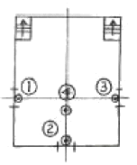
- ①
- ②
- ③
- ④
(정답률: 53%)
78. 용적이 360m3이고, 개구부의 합계 면적이 20m2인 방호 대상물에 전역 방출형식의 분말 소화설비를 설치할 때 ??한 최소한의 분사헤드 개수는? (단, 방호대상물 용적 1m3당 필요한 분말약제의 양은 0.6kg, 개구부 면적 1m2당 필요한 분말약제의 양은 최소 4.5kg, 분사 헤드의 표준방사량은 1분당 9kg, 분말 약제의 방사 시간은 30초를 기준으로 한다.)
- 17개
- 28개
- 34개
- 68개
(정답률: 21%)
79. 12층 건물에 설치하는 스프링클러 설비에 있어서 필요한 소화펌프에 직결시킨 전동기 용량(kW)으로 적절한 것은? (단, 0는 2.4m3/min, 펌프의 전양정은 70m, E는 0.6, 전달계수는 1.1이다.)
- 20[kW]
- 30[kW]
- 40[kW]
- 50[kW]
(정답률: 40%)
80. 소화기의 본체용기에 표시하지 않아도 되는 사항은?
- 비치장소
- 사용온도
- 방사시간
- 형식번호
(정답률: 44%)